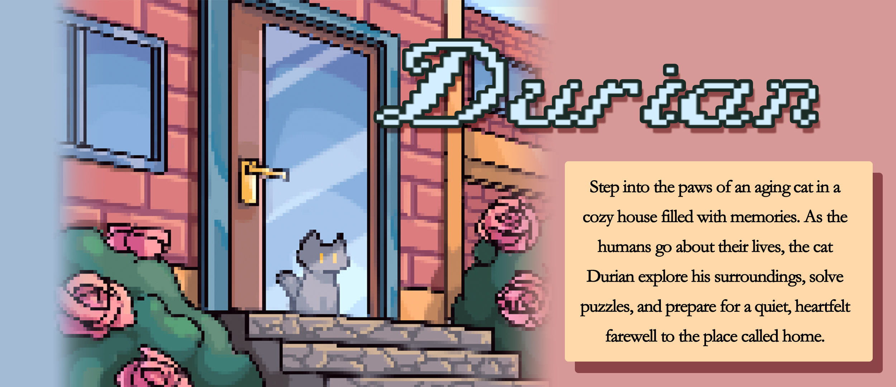
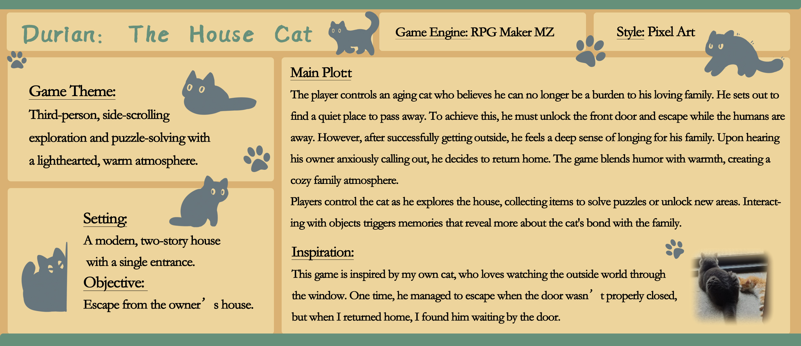
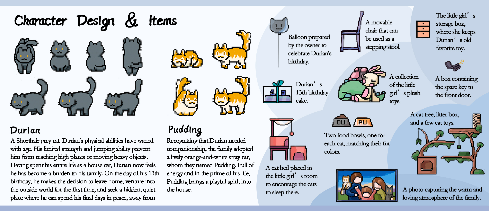
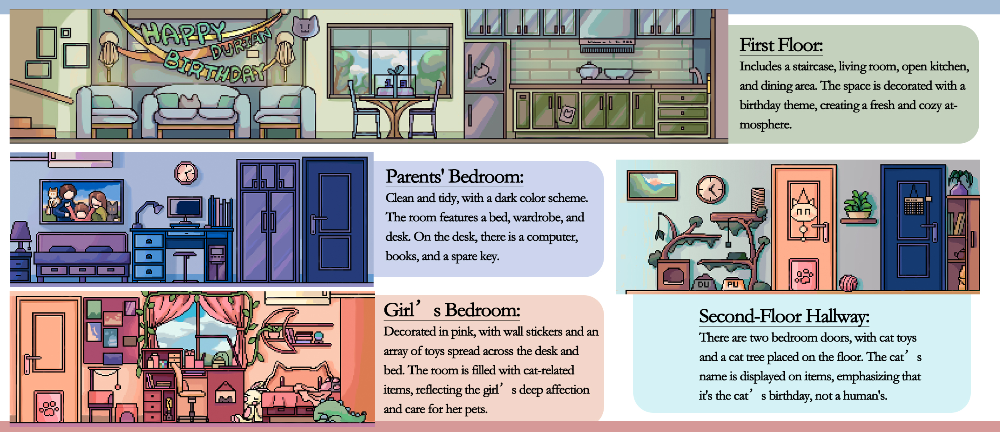
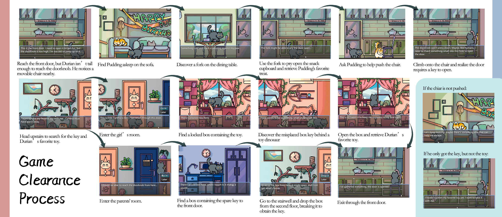
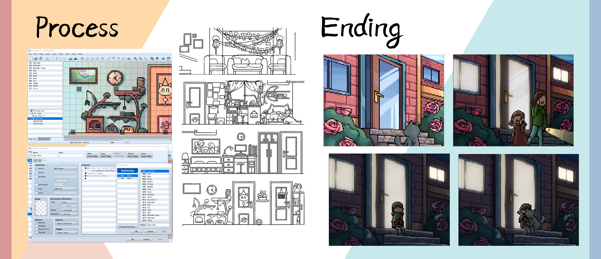

01 · 家猫流程演示在哔哩哔哩打开 ↗
01
STORY INTRODUCTION故事引言

中文译文
一个关于离家与归来的故事踏入一只年迈家猫的生活，在充满回忆的温馨家中展开旅程。
当家人忙于日常生活，德里安开始探索周遭、解开谜题，并为与这个称作“家”的地方静静告别做好准备。
一只年迈的家猫，在充满回忆的温馨住宅中展开探索。趁家人忙于日常生活，德里安寻找离家的方法、解开沿途谜题，并在旅程中重新体会与家人的深厚羁绊。

踏入一只年迈家猫的生活，在充满回忆的温馨家中展开旅程。
当家人忙于日常生活，德里安开始探索周遭、解开谜题，并为与这个称作“家”的地方静静告别做好准备。

第三人称横向卷轴探索与解谜，以轻松温暖的氛围展开。
故事发生在一栋只有一个出入口的现代双层住宅中。德里安的目标是离开主人的家。
玩家扮演年迈的猫德里安。他觉得自己不应继续成为家人的负担，于是决定离家，寻找一处安静的地方度过余生。趁家人外出时，他必须设法打开前门、离开住宅。然而真正来到户外后，德里安又深深思念家人。听见主人焦急地呼唤，他最终决定回家。游戏以幽默与温情交织出温馨的家庭氛围。
玩家操控德里安在家中探索，收集物品以解开谜题或开启新区域。与物件互动会唤起记忆，逐步揭示德里安与家人之间的羁绊。
灵感来自创作者自己的猫——它喜欢透过窗户观察外面的世界。有一次，门没有关好，猫溜了出去；创作者回家时，却发现它正等在门边。

一只灰色短毛猫。随着年岁增长，体力与跳跃能力逐渐衰退，无法到达高处，也搬不动重物。作为一只终生生活在家中的猫，他渐渐觉得自己成了家人的负担。在十三岁生日这天，他决定首次离家，走向户外，寻找一处隐蔽安静的地方，平静度过最后时光。
家人意识到德里安需要陪伴，便收养了一只活泼的橘白流浪猫，取名布丁。布丁正值壮年、精力充沛，为家中带来俏皮活力。

设有楼梯、客厅、开放式厨房与餐厅。生日主题装饰营造出清新、舒适的家庭氛围。
空间整洁，以较深的色调为主，配有床、衣柜与书桌。桌上摆放电脑、书籍和一把备用钥匙。
以粉色为主，墙上贴有装饰贴纸，书桌与床上散落着各种玩具。猫咪主题物件展现女孩对宠物的喜爱与照料。
走廊连接两间卧室，地上摆着猫玩具与猫爬架。物件上标有猫咪的名字，点明当天庆祝的是德里安的生日，而不是人类的生日。

来到前门。德里安够不到门把手，注意到附近有一把可移动椅子。
在沙发上发现正在睡觉的布丁。
在餐桌上找到一把叉子。
用叉子撬开零食柜，取出布丁最喜欢的零食。
请布丁帮忙把椅子推到合适的位置。
爬上椅子后发现，打开前门还需要钥匙。
上楼寻找前门钥匙，也寻找德里安最喜欢的玩具。
进入女孩辛西娅的房间；房间里有一个锁住的箱子，里面似乎装着玩具。
留意箱子下方的小物件，并在玩具恐龙后面找到箱子钥匙。
打开箱子，取回德里安最喜欢的玩具，让它陪伴自己。
进入父母卧室，找到装有前门备用钥匙的盒子。
带盒子到楼梯间，从二楼将它丢下。盒子摔开后，取得里面的钥匙。
拿到线索与物品后，回到一层并从前门离开。
尚未移动椅子：“这是前门。我得打开它才能出去，可门把手太高了。我已经老了，跳不上去。”
发现叉子：“有什么冰冷而坚硬的东西正抵着我的爪子……”
尝试打开零食柜：“也许可以用叉子把柜门撬开……”
检查门把手：“门把手压不下去。也许像人类一样，我得把什么小东西插进锁孔才能打开门。”
进入女孩房间：“这里是小辛西娅的房间。我可以从这扇门进去。”
找到箱子：“这里有一个上锁的箱子。”／“下面似乎压着什么小东西。”
发现玩具：“就是它！我想带着它，让它陪我度过最后的日子。”
暂时没有找到玩具：“再找找看吧，也许还有别的东西能帮我逃出去。”
发现备用钥匙盒：“我想把最喜欢的玩具带走……一定是辛西娅把它收起来了。”
检查盒子：“这里有个冰冷的盒子……碰到它时，会发出声响。”
准备摔开盒子：“如果从这里把盒子丢下去，也许能摔开，就能拿到里面的东西。”
拿到钥匙但还没找到玩具：“我还没找到最喜欢的玩具。我想把它一起带走。”
互动选项：“稍后进入”／“稍后再处理”。收集所需物品后，前门即可打开。

项目使用 RPG Maker MZ、Photoshop 与 Procreate 创作。这里展示地图与事件编辑、住宅平面与立面线稿，以及结局画面。
以门前场景呈现四种结局画面。光线、色彩与人物状态的变化，为德里安的离家旅程留下不同的情绪收束。